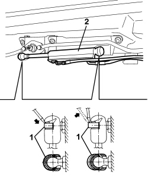
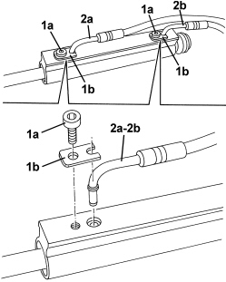

7030H43 HOOD FRONT LOCK HYDRAULIC ACTUATOR - R.R.
- Path
- Procedures > 70 FITTINGS > 7030 SUN ROOF/GLASS PANEL > 7030H AUTOMATICALLY OPERATED HOOD > 7030H43 HOOD FRONT LOCK HYDRAULIC ACTUATOR - R.R.
- Kind
- repair procedure (removal / refitting; the operation number is the code)
- Applies to
- engines: 2.2 JTS, 3.2 JTS; all production periods
- Interactive page
- https://sloeber94.github.io/elrnDB-aBrrSpdr/en/#/946003674
Applies to: engines: 2.2 JTS, 3.2 JTS; all production periods
 Removing
Removing
 Refitting
RefittingOp. 7030H20 HOOD FRONT PANEL - R.R.
- Prepare the hood for the operation.
Op. 0010T79 HOOD HYDRAULIC SYSTEM - DISCHARGE AND RESTORE PRESSURE
- Open the hydraulic system emergency release valve.
1. Using a screwdriver, release the retaining clips from both ends of the hydraulic actuator (without removing them).
2. Move the hydraulic actuator releasing it from the ball joints.

Applies to: engines: 2.2 JTS, 3.2 JTS; all production periods
1. Undo the bolts (1a) and remove the plates (1b).
2. Disconnect the pipes (2a) from the actuator (2b).

Applies to: engines: 2.2 JTS, 3.2 JTS; all production periods
Refitting
Removing- Check that the hydraulic actuator is not damaged.
- Connect the pipes to the actuator, then fit the plates and secure them using the bolts.
- Engage the hydraulic actuator with the ball joints and fit the retaining clips.
Op. 7030H20 HOOD FRONT PANEL - R.R.
- Restore the hydraulic system pressure.
Op. 7030H03 HOOD MANUAL OPENING FOLLOWING DEACTIVATION OF HYDRAULIC SYSTEM - CARRY OUT PROCEDURE
- Carry out several opening/closing cycles of the hood to bleed the hydraulic system.
- Check that the front hood locks hook/un-hook correctly.
Topics linked from this page (3)
- 0010T79 HOOD HYDRAULIC SYSTEM - DISCHARGE AND RESTORE PRESSURE
- 7030H03 HOOD MANUAL OPENING FOLLOWING DEACTIVATION OF HYDRAULIC SYSTEM - CARRY OUT PROCEDURE
- 7030H20 HOOD FRONT PANEL - R.R.